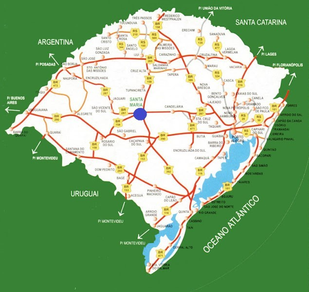
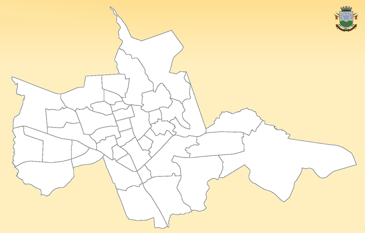

Santa Maria
A cidade de Santa Maria está localizada na parte central do Rio Grande do Sul, e por isso tem como apelido “o coração do Rio Grande do Sul”, tem aproximadamente 285 mil habitantes, e é formada por 10 distritos, que são divididos por um total de 41 bairros, e como consequência de sua vasta densidade, ela tornou-se a 5ª cidade mais populosa do Rio Grande do Sul.
O clima de Santa Maria é subtropical úmido, e o seu território está em uma área de transição de biomas, que dentre eles estão o bioma do pampa e o da mata atlântica, a cidade também é rodeada de morros, e por esse motivo a cidade é chamada de “Santa Maria da Boca do Monte”.
A cidade faz ligação rodoviária com todas as regiões do país e com as fronteiras da Argentina e do Uruguai, e também conta com o aeroporto, que tem a capacidade para pouso de avião de grande porte, e por sua localização estratégica, abriga uma base da força aérea brasileira. Santa Maria dispõe de uma grande quantidade de universidades, e por isso ela é um importante polo educacional. A cidade possui vários pontos turísticos, pois além de shoppings, restaurantes e lojas, a cidade conta com diversos prédios históricos que são conservados.
Dados:
Bandeira:
| Área total: | 1 779,556 km² |
| População estimada: | 285.159 |
| Densidade: | 160,2 hab/km² |
| Pib per capta: | 27.785,51 R$ |
| IDH: | 0,784 |